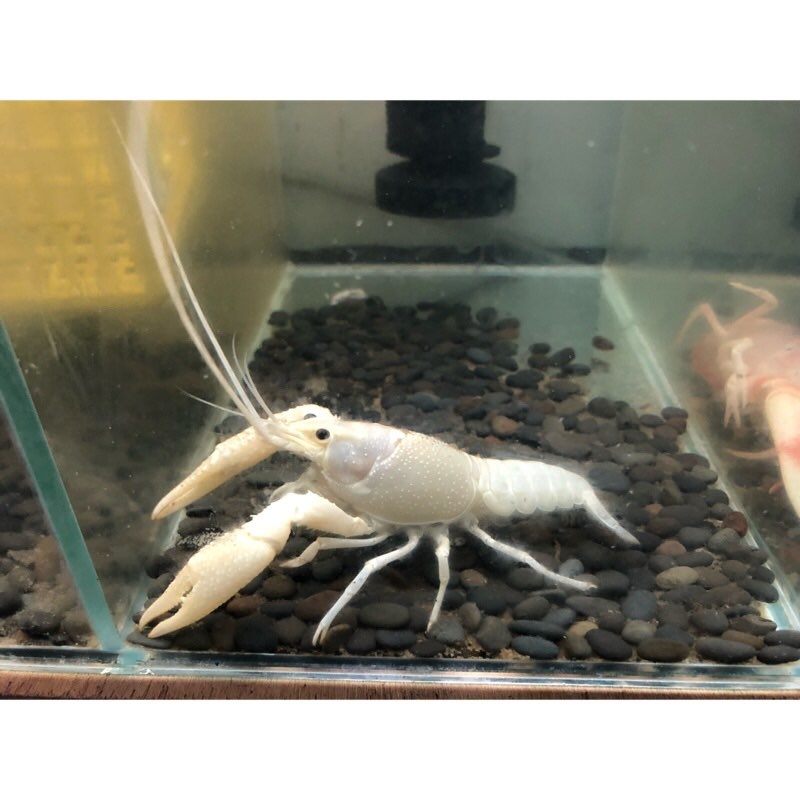

This is probably the most common species in fish stores. Apart from being very cheap (around 100NTD a piece) and accessible, this species is also extremely adaptable to the environment: native in the southern part of the USA, they could thrive in almost any body of water and thus have caused worldwide ecological crisis. This is also the species widely eaten in the mainland China, sold in the name of “little lobster”. In the wild they usually have a color of darkish red, but varieties of different colors have been bred; the most common (and thus cheapest) being the orange and the white, but breeders have been working on taking over the entire color spectrum. I personally own an orange one, and I will show the rest of the color variations in pictures below.
It is worth noting that although Procambarus clarki has blue variations too, the gene that is responsible for the blue color is very rare and unstable until the past few years; that is, even if you had blue parents you were not granted blue children. Nowadays the genetic lineage of blueness has stabilized and flourished, and on the market blue varieties are becoming more common as well as cheaper.
這大概是在水族館最常見的品種了。除了非常便宜、非常容易取得之外，這個物種也對環境有著極強的適應力：牠們原產於美國南部，但牠們的適應力已經讓牠們在全球各地不同水體中造成大小不一的生態危機。這也是在中國大陸被稱為「小龍蝦」而被販售、食用的物種。在野外，牠們的顏色一般是暗沉的紅色，但繁殖者們已經繁殖出了各種不同的顏色；最常見的是橘和白色，但繁殖者們正不斷開發出新的顏色。我自己擁有一隻橘螯蝦，我會將其他各種不同顏色的螯蝦圖片放在下面。
值得一提的是，即便克氏原螯蝦有藍色的種類，直到幾年前為止控制藍色的基因都非常罕見且不穩定；不穩定的意思是，即便親代都是藍色，子代也不一定會是藍色。如今擁有藍色基因的品系已經逐漸穩定且開枝散葉，市場上藍色個體也逐漸變得越來越常見、越來越便宜。
